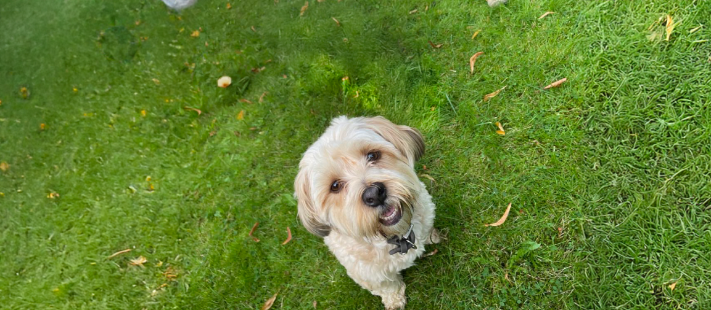
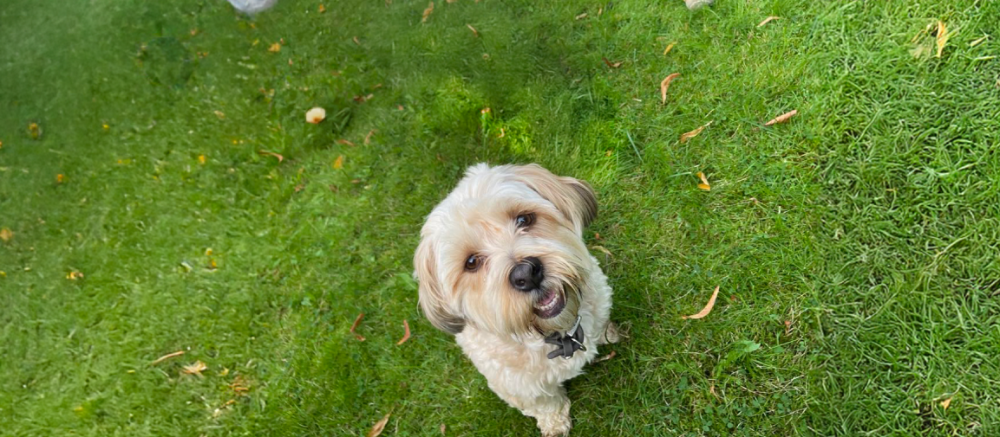

Indhold
Tema 5, ved navn grundlæggende indhold, var inddelt i to opaver. Den første blev kaldt for en sandkasse site, hvor vi skulle opbygge et site ud fra et selvvagt emne, et udleveret wireframe, tre designassociationer og en brugerrejse. Herudover skulle herosektionen indeholde en Lottie-animation, som skulle udvikles i Adobe After Effects. Vi skulle selv tage mindst fire billeder til siden, som skulle bearbejdes i Adobe Photoshop.
Jeg valgte at lave en side, som skulle ligne en slags datingprofil, til min hund Luna. Ud fra Lunas personlighed, kom jeg frem til følgende designassociationer:
- Eksklusivitet & Stil:
- Brug lyse, elegante farver (hvid, lyserød, pastel), luksuriøse fonte og lidt "high-end" følelse - Luna er kræsen og vælger ikke hvem som helst.
- Legende & Livlig:
- Små animerede elementer (fx potetryk, logrende haler), bløde kanter og en venlig tone i billeder og tekst – for at vise Lunas søde, energiske side.
- Personlighed & Attitude:
- Små citater eller badges som "Only the best!" eller "Kærlighed på Lunas betingelser" – så hendes stærke personlighed træder tydeligt frem.
Og herfra udviklede jeg dette styletile:
Lottie-animationen udviklede jeg i After Effects, som også indeholder tegninger fra Illustrator (poterne):
Billederne af Luna til sitet, er en blanding af billeder jeg allerede havde, og billeder jeg tog efterfølgende. Fotostilen beskrives som autentisk, og med minimal manipulering. Det skulle være personlige hverdagsbilleder, og billeder der ligner, de kommer fra en personlig kamerarulle, ligesom de ville på et datingsite. Ud fra denne fotostil, skulle billederne ikke ændres meget på, men herunder er et eksempel på, hvor jeg brugte Photoshops “generative fill” funktion:
 

Herunder kan min fulde løsning af opgaven ses:

I den anden opgave i tema 5, skulle vi re-designe en hjemmeside til en eksisterende virksomhed, i grupper. I min gruppe valgte vi en lokal frisør på Nørrebro, ved navn Stuen. Den eksisterende hjemmeside var simpel, og ifølge ejeren af salonen, var det en der fulgte med bookingsystemet:

Ejeren, Oddi, ville derfor gerne have en hjemmeside, der afspejlede salonens stil bedre, og dermed også hans personlige stil. Han gav os nogle ord at arbejde med: retro, arcade, cozy. Derudover var det også vigtigt for ham, at sitet skulle være tilgængeligt for alle, da han havde kunder af alle aldre og fra alle baggrunde.
Vi kom frem til følgende styletile:

Vi inddelte sitet i fire sider, udover forsiden, som passede med, at vi hver især havde én side, som vi var ansvarlige for. Udover, at jeg skulle lave “kontakt” siden, lavede jeg også en Lottie-animation til forsiden:
Herunder kan min fulde løsning til kontaktsiden ses: